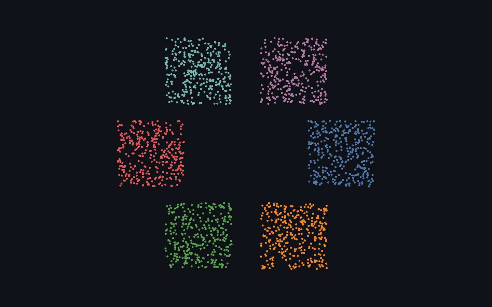
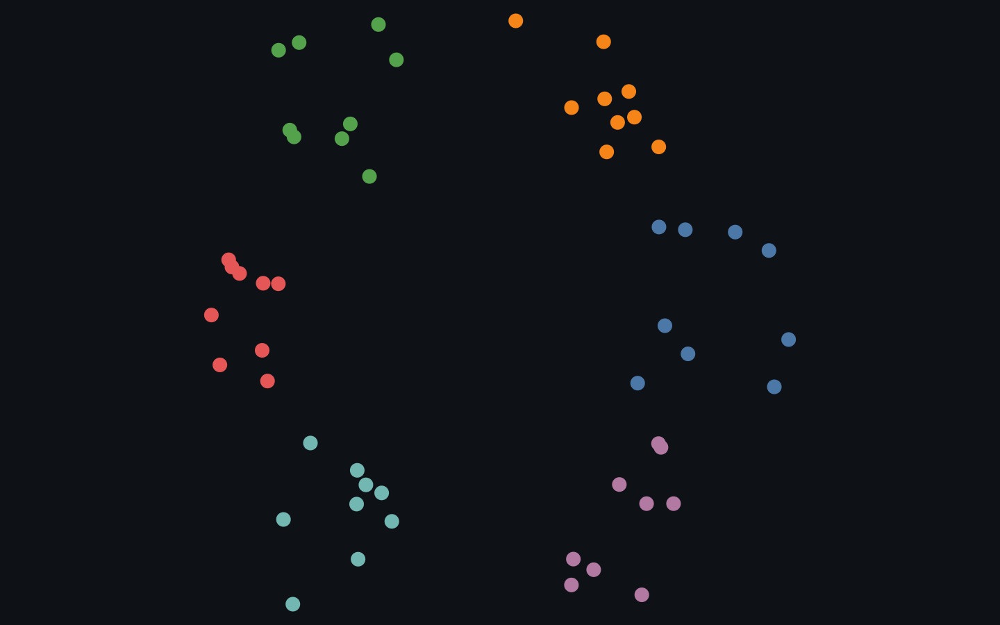
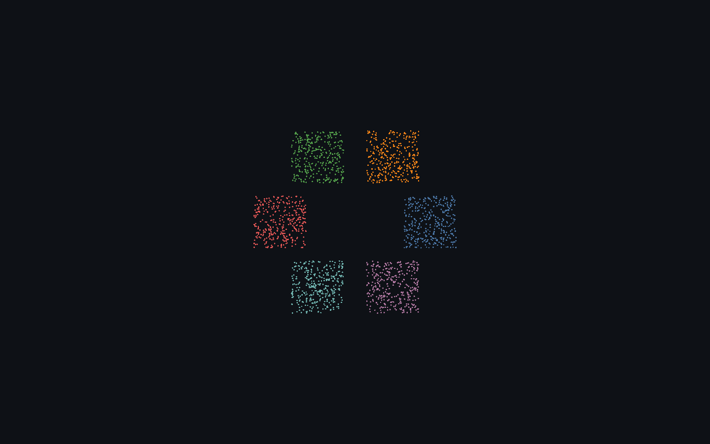
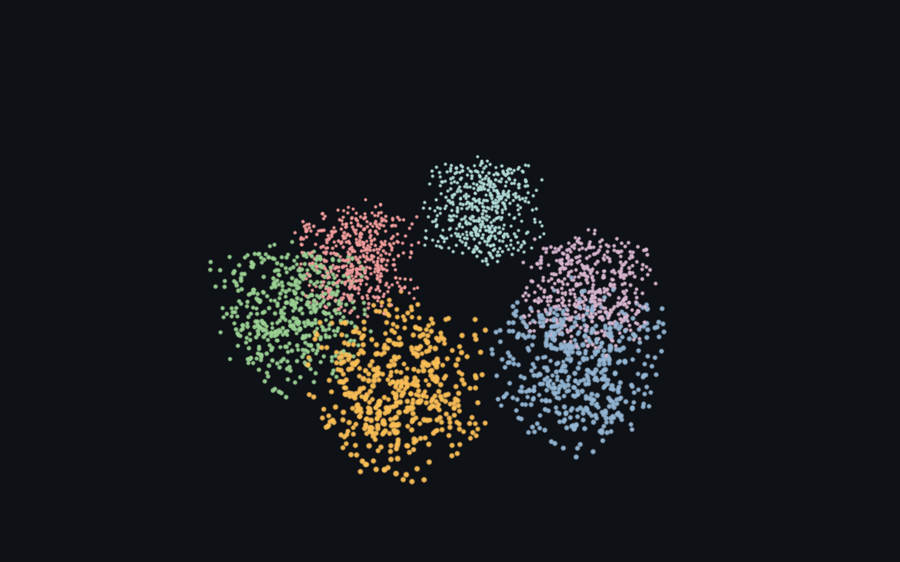
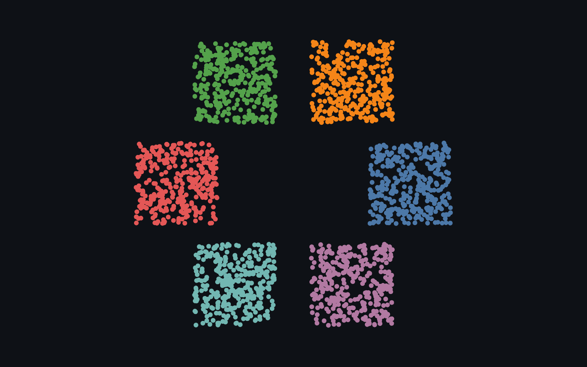

The base primitive — every benchmarked renderer draws points / nodes on the GPU. This is the row the whole speed benchmark stands on.

Rendered on the real GPU and gate-verified — it draws, and the pixels change when the camera moves (not a frozen frame). Held 120 fps at 2,000 points.

Rendered on the real GPU and gate-verified — it draws, and the pixels change when the camera moves (not a frozen frame). Held 120 fps at 54 nodes / 86 edges.

Rendered on the real GPU and gate-verified — it draws, and the pixels change when the camera moves (not a frozen frame). Held 120 fps at 2,000 points.

Rendered on the real GPU and gate-verified — it draws, and the pixels change when the camera moves (not a frozen frame). Held 120 fps at 3,000 points.

Rendered on the real GPU and gate-verified — it draws, and the pixels change when the camera moves (not a frozen frame). Held 120 fps at 2,000 points.
| Library | Support | Notes |
|---|---|---|
| deck.gl | ✓ native · verified | ScatterplotLayer — the base GPU point primitive. |
| Sigma.js | ✓ native · verified | Nodes are the base primitive; edges hidden here for a pure scatter. |
| cosmos.gl | ✓ native · verified | GPU point rendering — setPointPositions / setPointColors / setPointSizes. |
| three.js | ✓ native · verified | THREE.Points over a BufferGeometry — GPU point sprites. |
| Helios-Web | ✓ native · verified | Typed-array WebGL node rendering. |